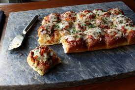

We're getting close to the football season, and it's not about who wins the championship, but rather who wins the snack table. If you show up with these super fun sliders, that will be you. The real secret to these beauties is placing the meatball in through the top of the roll, versus splitting and stuffing in the traditional manner. Maybe it's the symmetry, or center of gravity, that makes these just feel right in your hand. If you're short on time, using pre-made meatballs will do.